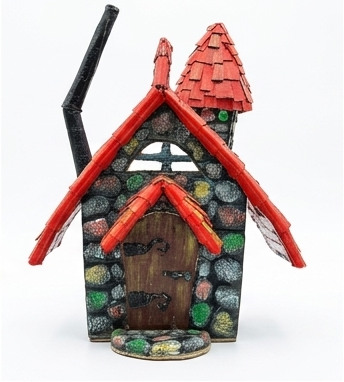
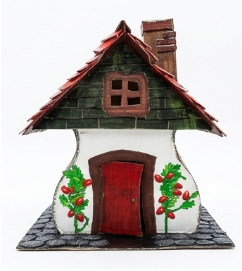

Cada pieza, una historia distinta
 Disponible
Disponible
La Casa del Bosque Antiguo
Tejado de escamas verdes, chimenea coronada por un hongo rojo. Nació una tarde sin ningún plan.
Cartón · Pintura acrílica · Materiales reciclados

DisponibleEl Refugio de la Bruja Buena
Paredes de piedra pintadas una por una, tejado rojo, chimenea inclinada hacia el cielo.
Cartón · Pintura acrílica · Papel texturizado

En su nuevo hogarLa Cabaña de los Hongos Rojos
Ventana con maceta de hongos amanita. Tejado de tablas de madera envejecida.
Cartón · Pintura · Musgo artificial · Hongos decorativos
 Disponible
Disponible
La Casa de las Flores de Invierno
Paredes blancas redondeadas con flores pintadas a mano. Puerta roja de arco.
Cartón · Pintura acrílica · Piedras pequeñas
 Disponible
Disponible
Noche de Nieve y Tejados Rojos
Cada escama pintada a mano con efecto nieve. Chimenea de ladrillo con hollín blanco.
Cartón · Pintura · Efecto nieve
 En su nuevo hogar
En su nuevo hogar
Aldea de Cuento Navideño
Cuatro casas distintas en un único escenario nevado. Un pueblo entero en miniatura.
Cartón · Pintura · Nieve artificial · Decoraciones
 Disponible
Disponible
El Portal de Navidad
Marco de piedra con escena navideña interior. Una niña, un árbol dorado, moños y muérdago.
Cartón · Yute · Cuerda · Cintas · Figuras decorativas
 Disponible
Disponible
La Esfera de la Luna de Invierno
Una luna de plata en fondo de yute, nieve, frutos rojos, y una cuerda de sisal guardando el mundo.
Yute · Sisal · Musgo · Frutos artificiales · Nieve · Cinta satén
 Disponible
Disponible
La Torre del Bosque Prohibido
Tres niveles de tejados verdes, ventanas rojas, ángulos que desafían toda lógica arquitectónica.
Cartón · Pintura acrílica · Técnica de envejecido
 Encargo especial
Encargo especial
La Casa de Campo con Jardín
Encargo personalizado: una casita inglesa con árbol seco real y camino de grava.
Cartón · Grava · Árbol seco natural · Musgo · Malla metálica